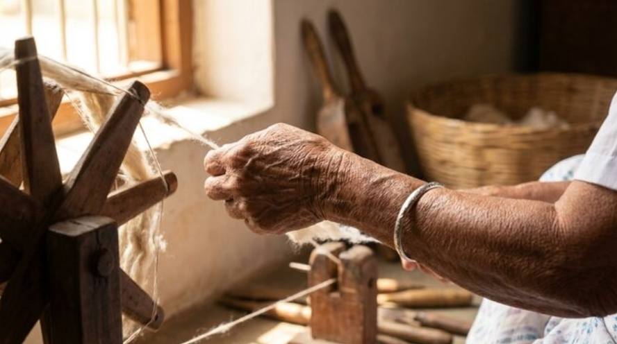
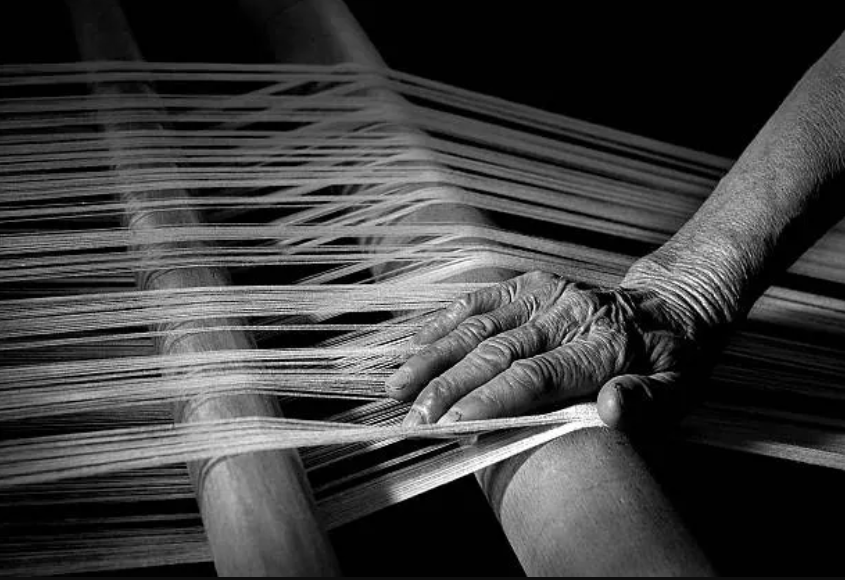
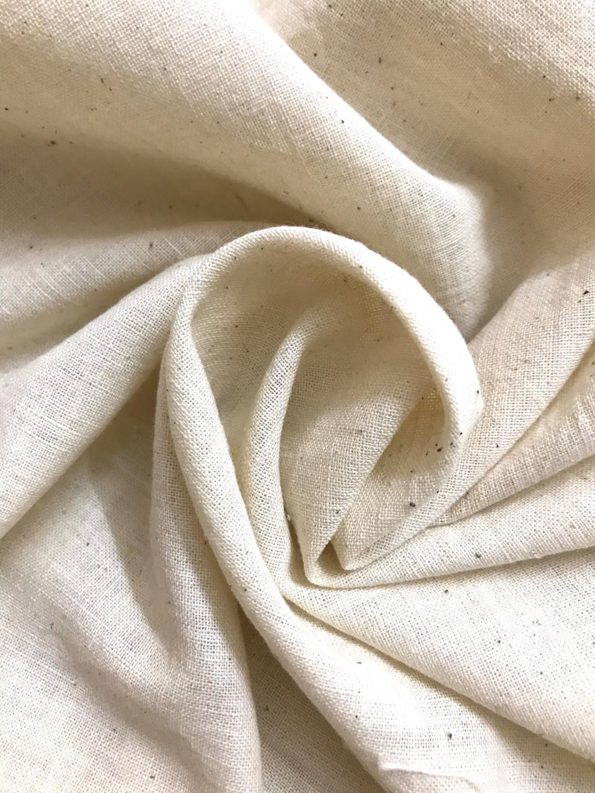
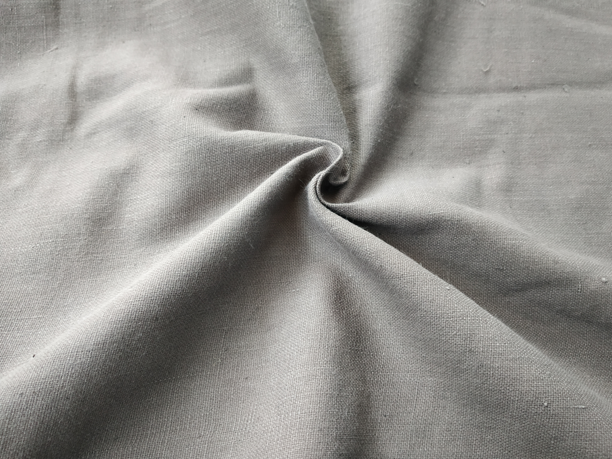
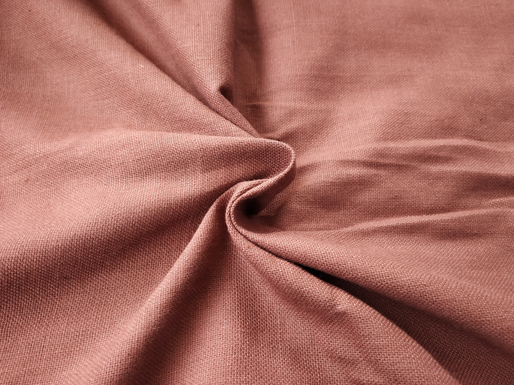
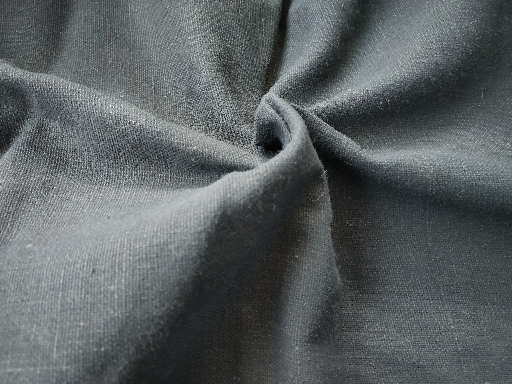

To touch the garment,
One must feel the hand.
The Rhythmic Cadence
Before the loom breathes, the fiber must be awakened. Our yarn is birthed through the slow, manual rotation of the Amber Charkha preserving the high-tensile character of the primordial seed. These subtle varations are the acoustic signatures of a living textile.
By overseeing the entire lifecycle—from the mineral-rich soil of the southern plains to the master looms of the atelier—Felis Onca ensures an unbroken chain of custody. Every thread is a preserved lineage, traced back to its biological origin.


Mastery of the Hand
When cotton is woven by hand, tension is managed by human sensitivity. This deliberate interlacing preserves the natural air-pockets of the indigenous fiber, creating an organic breathability that acts as a second, thermal skin.
Unlike the crushed, lifeless fibers of industrial production, Felis Onca cloth remains structurally "alive". It is a responsive topography that adapts to the climate and the unique silhouette of the weaver.
"Every thread is a dialogue between the ancestor and the artisan."
— The Atelier of Wisdom



The Living Patina
Our palette is a silent dialogue with nature—a collection of living colors birthed from deep intelligence. These pigments are bound to the heart of the fiber through the patience of time.